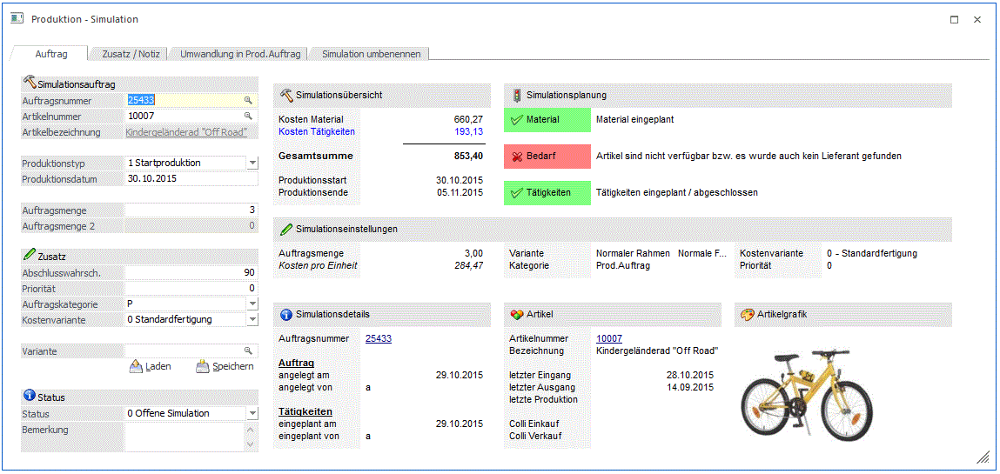
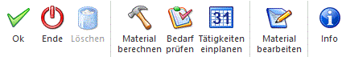

Im Fenster "Produktion - Simulation", welches über den Menüpunkt
1 WinLine PPS
1 Produktion
1 Simulation
erreicht wird, können Simulationsaufträge manuell angelegt und bearbeitet werden.

Simulationsaufträge bieten die Möglichkeit, sowohl Material- als auch Ressourcenverfügbarkeiten zu prüfen, ohne das erforderliche Material zu disponieren bzw. die erforderlichen Ressourcen zu reservieren.
Hinweis
Simulationsaufträge können auch während der Angebotserfassung erstellt werden. Siehe dazu Option "2 als Simulation öffnen" im Feld "Produktionsstückliste in der Stufe Angebot" in den FAKT-Parameter, Bereich "Belege/Stücklisten". In diesem Fall ist die Simulationsauftrag direkt mit einer Belegzeile verknüpft.
Die folgenden Eingabefelder können bearbeitet werden:
Simulationsauftrag
Ø Auftragsnummer
In diesem Feld wird eine eindeutige Nummer eingeben, die als Simulationsauftragsnummer verwendet wird (20stellig, alphanumerisch). Die nächste freie Nummer aus dem Standard-Nummernkreis (PPS-Parameter, Bereich "Produktionsauftragsanlage") wird standardmäßig herangezogen.
Ø Artikelnummer
Eingabe des zu produzierenden Produktionsartikels.
Ø Artikelbezeichnung
Anzeige der Bezeichnung des zu produzierenden Produktionsartikels.
Ø Produktionstyp
Über den Produktionstyp wird bestimmt, ob die Produktion zu einem bestimmten Zeitpunkt (das "Produktionsdatum") starten oder enden soll. Es stehen die folgenden Optionen zur Auswahl:
ü Zielproduktion
ü Startproduktion
Ø Auftragsmenge
In diesem Feld kann die Menge des Produktionsartikels eingeben werden, die produziert werden soll.
Ø Auftragsmenge 2
Wenn der Produktionsartikel in 2 Mengen geführt wird, dann kann an dieser Stelle auch die Auftragsmenge für die 2 Menge eingegeben werden.
Ø Abschlusswahrscheinlichkeit
Hier kann einen Prozentsatz als Abschlusswahrscheinlichkeit für die Simulation hinterlegt werden. Reservierungszeiten für Simulationen können wahlweise in Auswertung "Ressourcenauslastung" berücksichtigt werden. Diese Zeiten werden im Verhältnis zum Abschlusswahrscheinlichkeits-Prozentsatz der Ressourcenauslastung angerechnet.
Beispiel
Eine Ressource ist grundsätzlich für 8 Stunden am Tag verfügbar. Die Ressource ist an einem bestimmten Tag 4 Stunden für einen Produktionsauftrag reserviert und für 2 Stunden für eine Produktions-Simulation. Die Simulation hat einen Abschlusswahrscheinlichkeits-Prozentsatz von 50%. Somit ist die Ressource für insgesamt 5 Stunden an dem Tag ausgelastet (4 Stunden + 2 Stunden x 50%).
Hinweis
Bei der Angabe eines Wertes >= 100 erscheint eine Abfrage, ob die Simulation gleich in einen Produktionsauftrag umgewandelt werden soll.
Der Prozentsatz kann für eine bestehende Simulation editiert und nochmals gespeichert werden.
Ø Priorität
Über die Priorität kann gesteuert werden, in welcher Reihenfolge Simulations- bzw. Produktionsaufträge eingelastet werden. Aufträge mit einer hohen Priorität vor Aufträgen mit einer niedrigen Priorität bei der Einlastung vorgezogen.
Ø Auftragskategorie
In diesem Feld kann eine Produktionsauftragskategorie selektiert werden. Standardmäßig ist die Kategorie hinterlegt, die der voran angegebenen Priorität entspricht. Bei Anwahl einer Kategorie wird der niedrigste Prioritätenwert laut der Kategorien-Definition ("ab Priorität") automatisch eingestellt.
Ø Kostenvariante
Drei Optionen stehen in diesem Feld zu Verfügung:
ü 0 Standardfertigung
ü 1 Schnelle Fertigung
Wenn eine
schnelle Variante bei der jeweiligen Tätigkeit in der Stückliste hinterlegt ist
(siehe Fenster "Tätigkeitenstamm", "Kostenvarianten"), wird bei Anwahl dieser
Option die entsprechende schnelle Variante (inkl. Ressourcen, Zeiten, usw.) für
die Planung herangezogen.
ü 2 Billige Fertigung
Wenn eine
billige Variante bei der jeweiligen Tätigkeit in der Stückliste hinterlegt ist
(siehe "Tätigkeitenstamm", "Kostenvarianten") wird bei Anwahl dieser Option die
entsprechende billige Variante (inkl. Ressourcen, Zeiten, usw.) für die Planung
herangezogen.
Hinweis
Um das schnellstmögliche Fertigstellungsdatum zu erreichen, kann prinzipiell entweder die Priorität dementsprechend hinterlegt werden (Simulationen mit einer hohen Priorität werden vor Aufträgen mit einer niedrigen Priorität reserviert) oder es kann eine schnellere Kostenvariante gewählt werden.
Ø Status
Einer Simulation kann einer von 4 Statuswerten zugewiesen bekommen:
ü 0 Offene Simulation
Diesen
Status haben alle Simulationsaufträge, die noch in keine Folgestufe umgewandelt
wurden.
ü 1 Alternative Simulation
Eine
Simulation kann als alternative Simulation angelegt werden. Eine alternative
Simulation wird in manchen Auswertungen (z.B. Ressourcenauslastung) nicht bei
der Simulationswerten mitberücksichtigt.
ü 2 In Planung
Wenn man mit einer Simulation anfangen möchte obwohl man noch nicht alle Komponenten fix weiß, bekommt diese den Status ‘in Planung‘. Daran kann man erkennen, dass noch nicht alle Details geklärt sind.
ü 8 Abgeschlossen (-) und 9
abgeschlossen (+)
Die zwei Kennzeichen gelten für eine abgeschlossene
Simulation, wobei hier zwischen positiv abgeschlossen (= es gibt einen daraus
abgeleiteten Produktionsauftrag) und negativ abgeschlossen (= Simulation wurde
zu keinem Produktionsauftrag umgewandelt) unterschieden werden kann.
Buttons

Ø OK
Die erfassten Simulations-Einstellungen können mit diesem Button gespeichert werden.
Ø Ende
Der Programmbereich wird verlassen. Wurde der OK-Button noch nicht gedrückt werden die Änderungen nicht gespeichert.
Die folgenden drei Buttons sind direkt mit den Stati-Anzeigen im Bereich "Simulationsplanung" verbunden:
Ø Material berechnen
Beim Öffnen des Fensters wird das Material in der Stückliste automatisch kontrolliert, d.h. ob alle Eingaben in der Stückliste in Ordnung sind. Durch Änderung einer wesentlichen Einstellung wie die Variante bzw. eine geänderte Stückzahl wird die Stückliste nicht automatisch wieder eingeplant, sondern kann die Berechnung mit diesem Button separat nochmals angestoßen werden. Nach erfolgreicher Berechnung leuchtet die Statusanzeige grün auf (mit entsprechendem Text), andernfalls leuchtet die Status-Anzeige rot auf.
Ø Bedarf prüfen
Bei Anwahl dieses Buttons wird das Fenster "Verfügbarkeitsliste" im Hintergrund geöffnet, um die Materialverfügbarkeit gemäß dem Produktionsdatum zu überprüfen. Nach der Überprüfung wird die Verfügbarkeitsliste immer automatisch wieder geschlossen. Der ermittelte Verfügbarkeitsstatus wird dann in der Status-Anzeige "Bedarf" gleich angezeigt bzw. aktualisiert. Beispielsweise kann aufgrund der Zuweisung einer hohen Priorität festgestellt werden, ob das Material für die Simulation verfügbar wäre (d.h., mit Berücksichtigung von schon verplanten Produktionsaufträgen, die eine niedrigere Priorität aufweisen).
Hinweis
Produktions-Dispositionszeilen ("für Produktion") werden zu keinem Zeitpunkt für das Material eines Simulationsauftrags erzeugt.
Ø Tätigkeiten einplanen
Beim Öffnen des Fensters versucht das Programm, die Tätigkeiten einzuplanen. Abhängig davon wird die Status-Anzeige "Tätigkeiten" aktualisiert (Erfolg/kein Erfolg). Durch Änderung einer wesentlichen Einstellung bzgl. der Einplanung (Priorität, Datum, Kostenvariante, Stücklisten-Baugruppen) wird die Simulationsauftrag nicht automatisch wieder eingeplant, sondern kann der Benutzer mit diesem Button das Fenster "Tätigkeiten einplanen" für den Auftrag nochmals aufrufen. Nach dem Einplanungslauf wird die Status-Anzeige dementsprechend aktualisiert.
Ø Material bearbeiten
Bei Anwahl dieses Buttons wird das Fenster "Stücklisten bearbeiten" für den Simulationsauftrag geöffnet, in dem die folgenden Bearbeitungsmöglichkeiten zur Verfügung stehen:
ü Änderung der benötigten Mengen der einzelnen Komponenten
ü Austausch von Komponenten durch andere Komponenten
ü Hinzufügen von Komponenten
ü Entfernen von Komponenten
Ø Info
Die Auswertung "Produktion - Simulation" kann mit wesentlichen Informationen zum Simulationsauftrag (Gesamtkosten, Kosten pro Einheit, Produktionsstart-/Enddatum, usw.) mit diesem Button ausgegeben werden.